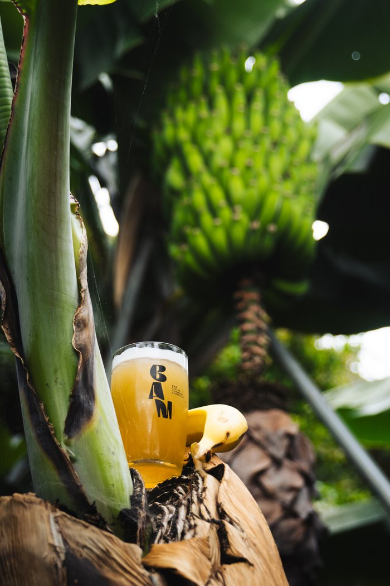
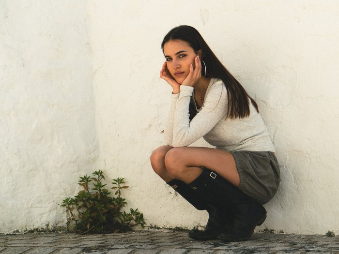
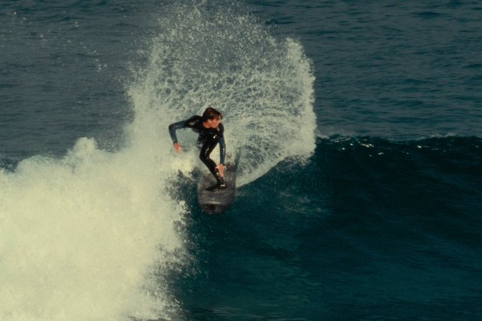
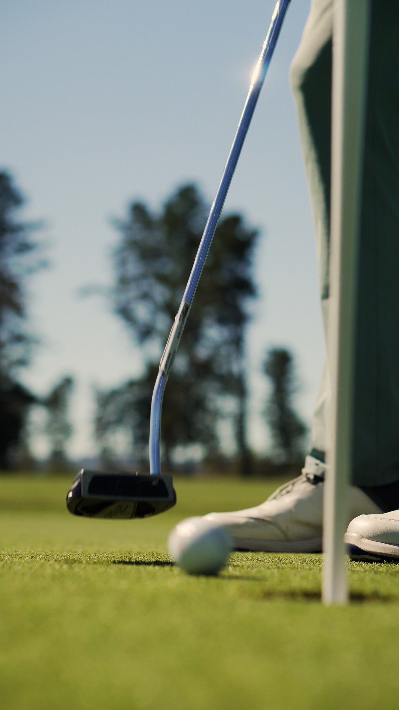
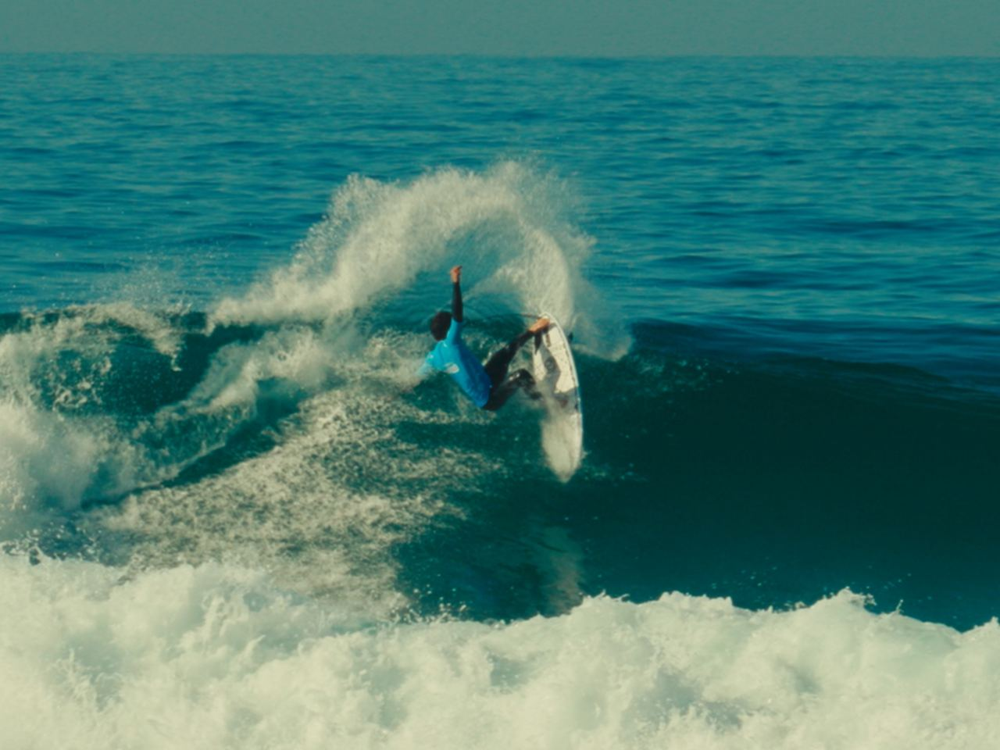
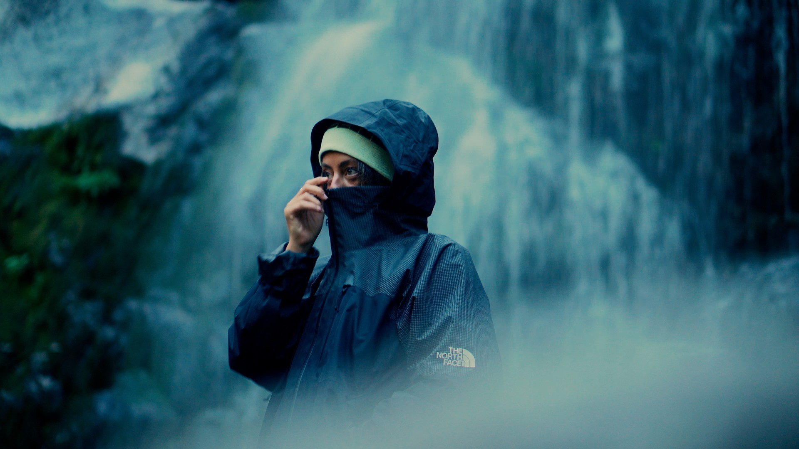
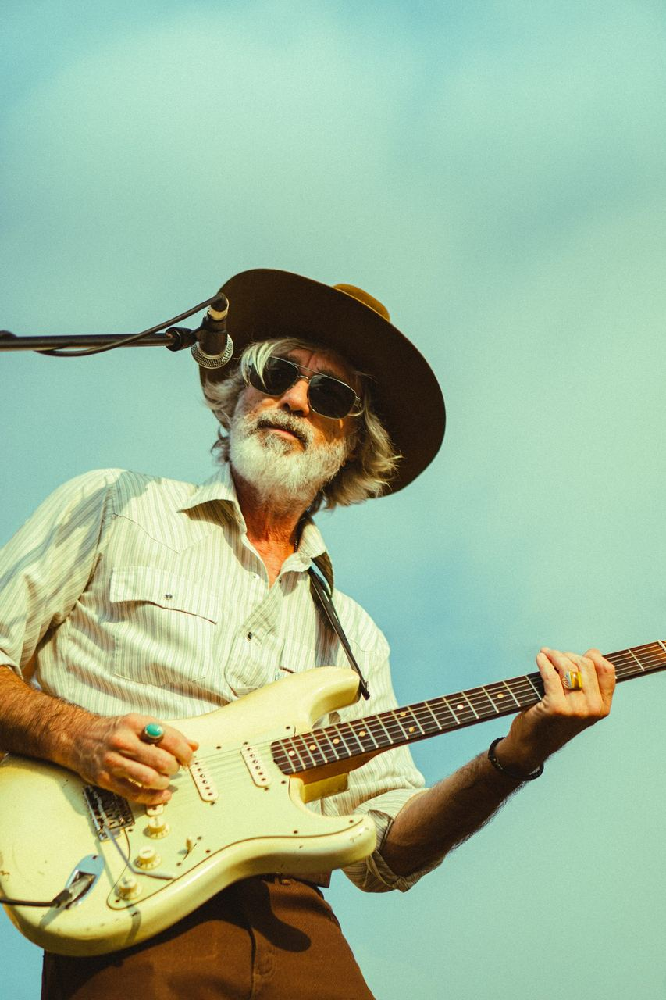

Empresas y marcas
Vídeo corporativo, producto, eventos y campañas, con un mensaje claro y un acabado cuidado.
Producciones completas o cortas con resultados cinematográficos.
Fotogramas

Vídeo corporativo, producto, eventos y campañas, con un mensaje claro y un acabado cuidado.

Retratos y reportajes para personas, parejas y familias, con las fotos editadas y listas para usar.

Anuncios, presentaciones y contenido para pantalla: formatos breves con ritmo y calidad de cine.
¿Tu proyecto es distinto? Cuéntamelo y lo planteamos a medida.
Hablemos



Han confiado en mí
De la primera conversación a la entrega del vídeo.
Entiendo qué necesitas y qué quieres transmitir.
Defino la idea, el estilo y el plan de rodaje.
Grabo con calma y con el equipo adecuado para cada proyecto.
Edito, ajusto color y sonido, y te lo entrego listo para usar.

Filmmaker y fotógrafo en A Coruña
Trabajo con empresas y particulares. Realizo producciones de duración media y corta, desde el guion hasta el montaje y el color.
Basado en A Coruña, con disponibilidad para desplazarme al lugar donde se desarrolle el proyecto.
Cuéntame qué necesitas y te respondo con una propuesta, sin compromiso.
Gracias por escribirme. Te respondo en cuanto pueda, normalmente en menos de 48 horas.